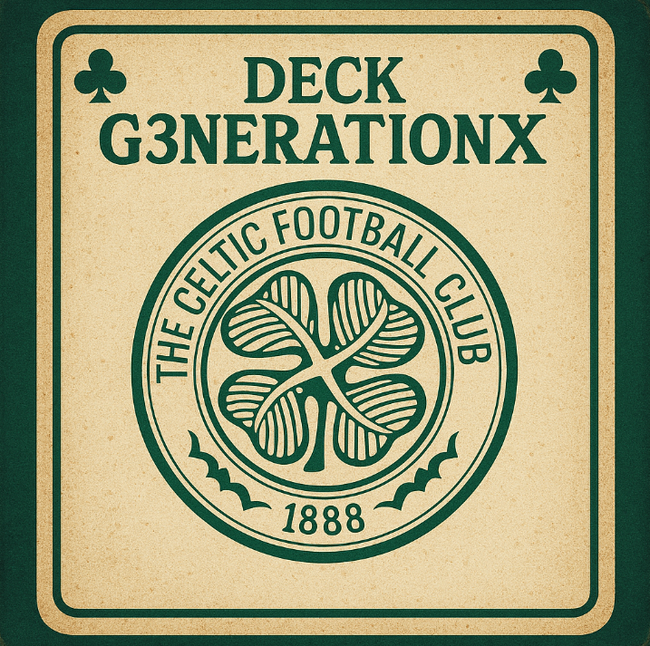

Coachs
Carlo Ancelotti
Will Still
Thiago Motta
Karel Geraerts
Xabi Alonso
Ruben Amorim
Paulo Pezzolano
Eduardo Coudet
Andoni Iraola
Sebastian Hoeness
Enzo Maresca
Vincent Kompany
Igor Tudor
Michel Der Zakarian
Daniel Farke
Gary O’Neil
Rudi Garcia
José Luis Mendilibar
Philippe Clement
Paulo Sousa
Francesco Farioli
Fernando Diniz
Jorge Jesus
Abel Ferreira
Marcelo Gallardo
Domenico Tedesco
Roger Schmidt
Unai Emery
Bruno Génésio
Christophe Galtier
Luciano Spalletti
Gerardo Martino
Jorge Sampaoli
Marcelo Bielsa
Julen Lopetegui
Maurizio Sarri
Quique Setién
Mark van Bommel
Carlos Carvalhal
Juan Reynoso
Jesse Marsch
José Mourinho
Pep Guardiola
Jurgen Klopp
Diego Simeone
Louis van Gaal
Didier Deschamps
Tite
Hansi Flick
Joachim Low
Laurent Blanc
Frank Rijkaard
Vicente del Bosque
Arsène Wenger
Fabio Capello
Marcelo Lippi
Rafael Benítez
Walter Mazzarri
Roberto Mancini
Alex Ferguson
Johan Cruyff
Arrigo Sacchi
Rinus Michels
Telê Santana
Luiz Felipe Scolari
Carlos Alberto Parreira
César Luis Menotti
Mario Zagallo
Enzo Bearzot
Ottmar Hitzfeld
Helenio Herrera
Franz Beckenbauer
Zinédine Zidane
Walter Frosch
Rubén Sellés
Thomas Tuchel
Sylvinho
Juan Carlos Osorio
Gustavo Alfaro
Ricardo Gareca
Sabri Lamouchi
Paco Jémez
Hernán Crespo
Fernando Hierro
Erik ten Hag
Bruno Lage
David Moyes
Roberto De Zerbi
Steve Cooper
Miguel Ángel Ramírez
Fatih Terim
Guus Hiddink
Claudio Ranieri
Manuel Pellegrini
André Villas-Boas
Albert Roca
Rudi Voller
Jorge Almirón
Hervé Renard
Hervé Renard
Samba Diawara
Vincenzo Italiano
Mano Menezes
Ruud van Nistelrooy
Voltar